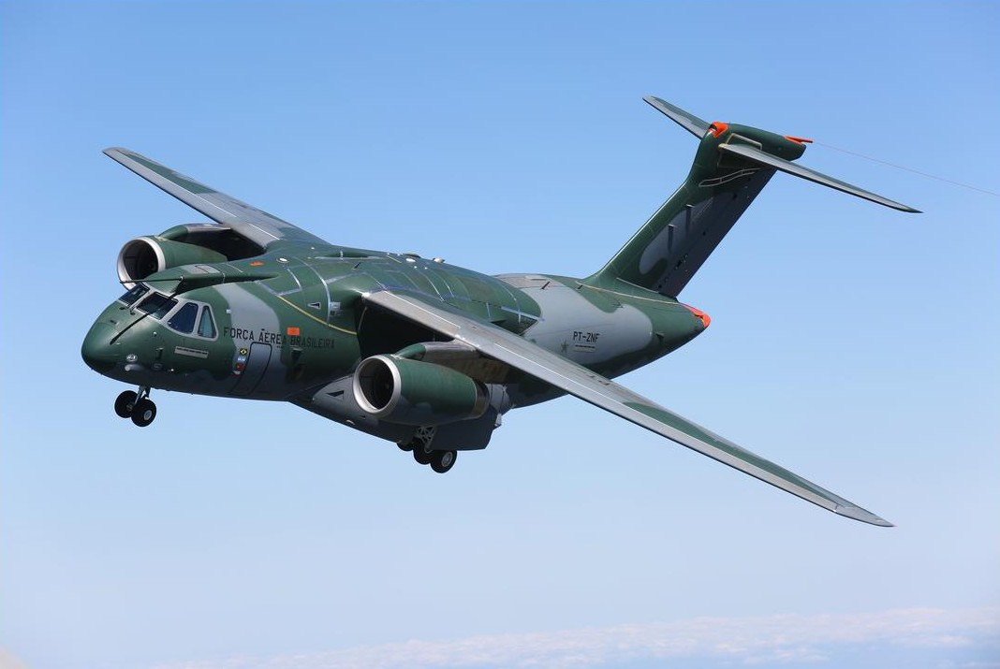
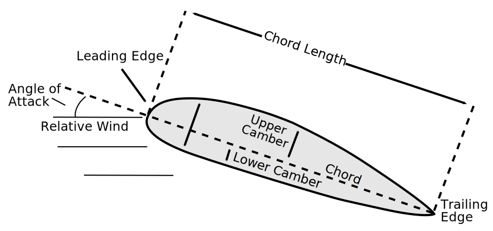
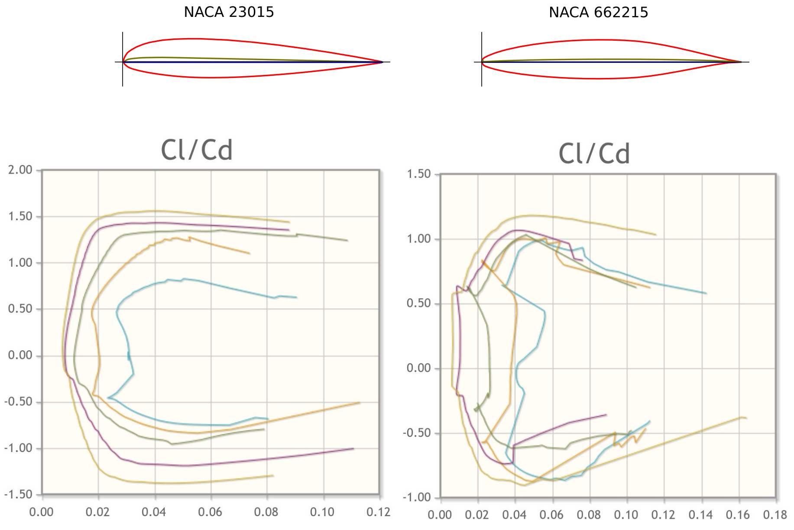
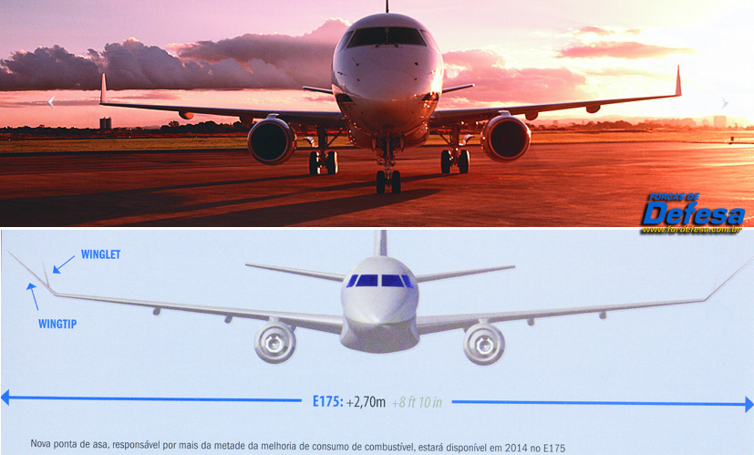
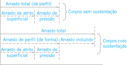
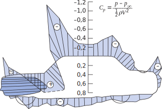

$$\newcommand{\Vol}{\rotatebox[origin=c]{180}{\ensuremath{A}}}$$
$$\newcommand{\vv}[1]{\overset{→}{#1}}$$
$$\require{cancel}$$
Sustentação
Mecânica dos Fluidos 2
Sustentação
Força perpendicular ao escoamento
$$
C_L\equiv {{F_L}\over{{1\over 2}\rho V^2 A_p}}
\tag{1}
$$
$ C_{L} $ equivale à variação quadrática de $ V $ !
Sustentação em aerofólios


$$C_L=f(Re,\alpha)$$
Sustentação em aerofólios
- $ \alpha $ é o ângulo entre a corda e o escoamento;
- Sua espessura é distribuída ao longo de uma linha média;
- Cambado é um aerofólio de linha média curva;
- Área planiforme é a máxima área projetada para o perfil;
- Na Eq. (1) essa é a área utilizada, devido à variação do ângulo de ataque.
Efeito Bernoulli
Maior pressão no intradorso ou superfície de pressão e menos no extradorso ou superfície de sucção.
Perfis dos tipos convencional e laminar. Seus polares sustentação-arrasto são mostrados abaixo também.

Figure 1: Ambos os perfis NACA cambados para gerar sustentação.
Efeitos do descolamento em aerofólios
- $ C_D $ aumenta subitamente com o gradiente adverso;
- Perfis laminares são projetados para regiões de baixo arrasto;
- Devido às bordas agudas, instabilidades são amplificadas em perfis laminares;
- Perfis laminares possuem um valor menor de $ C_{L,max} $;
- Dados $ m $ e $ \vv{V} $, a potência requerida para vôo é inversamente proporcional à $ C_L \over C_D $.
Otimização de aerofólios
- Realizada geralmente por análise numérica;
- A transição é retardada até uma região próxima ao bordo de fuga;
- Uma vez turbulento, o escoamento é mantido em um estado embrionário;
- Aí consegue-se, controlando a pressão, chegar a valores próximos de zero para o arrasto.
Efeitos de ponta de asa
- Asas reais não possuem envergadura infinita;
- Estruturas nas extremidades da asa contribuem para
o aumento de $ C_D $ e diminuição de $ C_L $;
- Geralmente são correlacionados pela razão de
aspecto (da asa) $ ar\equiv {b^2\over A_p} $;
- Ou seja, para uma seção planiforme de envergadura
b e corda c, teremos $ ar\equiv {b\over c} $
Efeitos de envergadura
- Valores de $ C_L \over C_D $ podem chegar a 400 se a envergadura for infinita;
- Planadores de alto desempenho com $ ar=40 $ possuem
$C_L \over C_D \approx 40 $;
- Aviões comuns com $ ar=12 $ apresentam $ C_L \over
C_D \approx 20 $;
- Hidrofólios e corpos de reentrada atmosférica podem
possuir $ C_L \over C_D < 1 $.
Vórtices de fuga
- Uma asa pode gerar vórtices de fuga (sustentação);
- Estes podem atingir aeronaves de 8 km a 16 km;
- Tais vórtices possuem velocidades de até 320 km/h;

Arrasto induzido
- As velocidade induzidas para baixo reduzem o ângulo de ataque efetivo;
- Comparando com uma asa de $ar=\infty$:
$$\Delta \alpha \approx {C_L \over \pi ar}$$
e o arrasto total será aumentado de:
$$\Delta C_D \approx \Delta \alpha C_L \approx {C_{L}^{2} \over \pi ar}$$
Condições de vôo
- O arrasto varia pouco com $ \alpha $, sendo mais dependente de $ Re $;
- Para condições de vôo estável:
$$W = F_L = {1\over 2}C_L\rho A_p V^2$$
e a velocidade mínima para manter o arrasto será:
$$V_{min} =\sqrt{2W\over \rho A_p C_{L,max}}$$
Condições de vôo
Duas soluções bastante adotadas são:
- Seções de asa com geometria variável (flaps);
- Técnicas de controle de camada limite.

Condições de vôo
- Para o perfil NACA23012, a utilização de flapes duplos aumenta o \( C_{L,max} \) de 1,52 para 3,48;
- Isso equivale a uma redução de 34% na velocidade necessária para aterissagem;
- Para $ C_{L,max} $, tem-se $ C_{D}\approx 0,28 $
utilizando flapes e $ C_{D}\approx 0,005 $ sem flapes
Estabilidade aerodinâmica
BBLTTNCFSMPAM
Sustentação sobre automóveis

Sustentação - Arrasto em aves
How Does An Owl Fly So Silently?
Efeito Solo (Ground Effect)
Efeito Cabo (Cabe Effect)